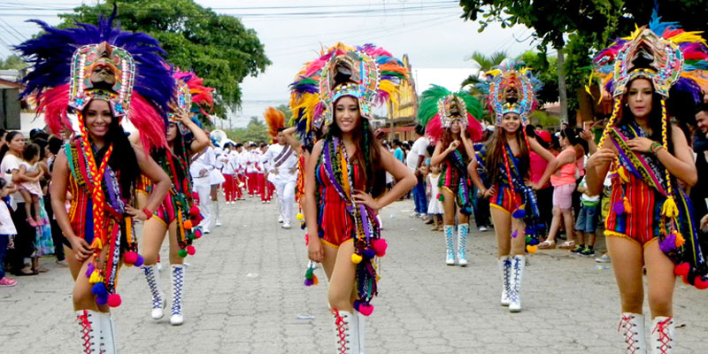

Izabal es una región con una gran diversidad cultural, influenciada por la cultura garífuna, maya q'eqchi' y mestiza. Algunas de sus costumbres más representativas son:
1. Celebración de la Feria de Livingston: Esta festividad en diciembre rinde homenaje a la Virgen de Guadalupe con procesiones, danzas garífunas como la punta y eventos culturales.
2. Dugu Garífuna: Es una ceremonia espiritual y ancestral de la comunidad garífuna que involucra música, danza y rituales para honrar a los antepasados.
 Volver